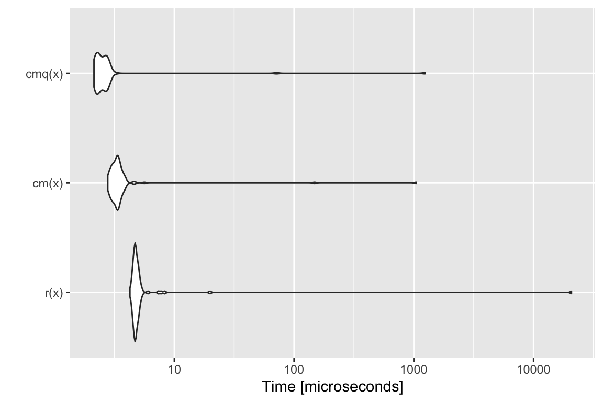
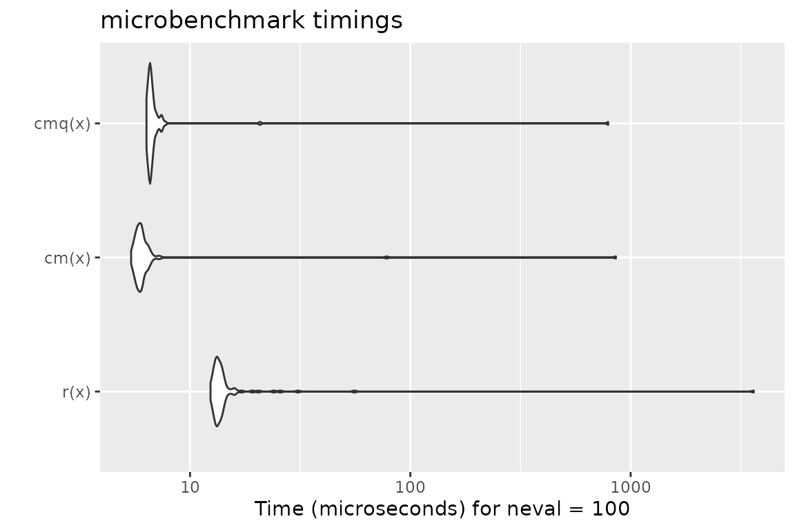
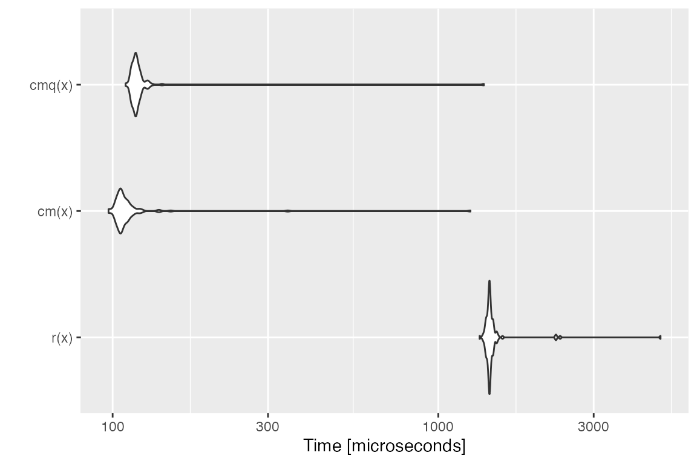
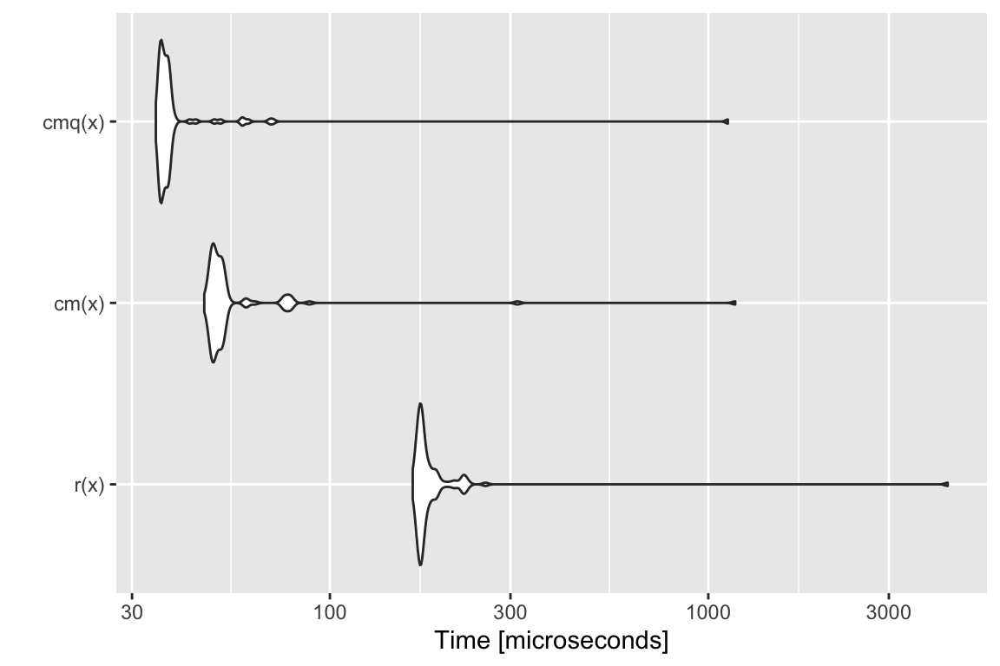
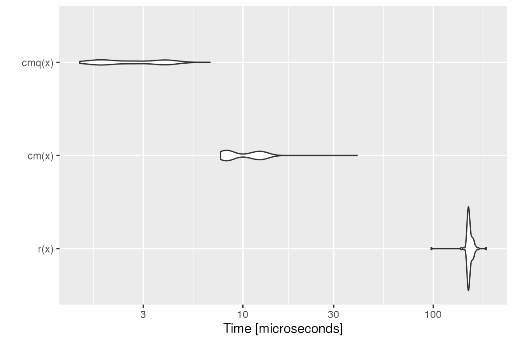
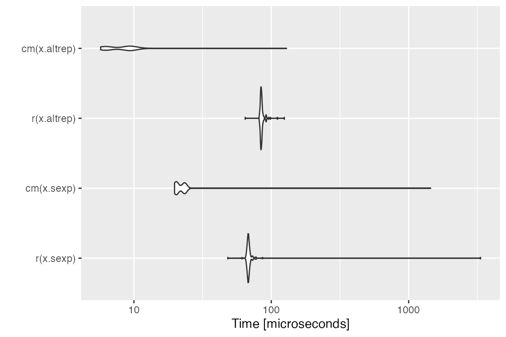

Ever used an R function that produced a not-very-helpful error message, just to discover after minutes of debugging that you simply passed a wrong argument?
Blaming the laziness of the package author for not doing such standard checks (in a dynamically typed language such as R) is at least partially unfair, as R makes theses types of checks cumbersome and annoying. Well, that’s how it was in the past.
Enter checkmate.
Virtually every standard type of user error when passing arguments into function can be caught with a simple, readable line which produces an informative error message in case. A substantial part of the package was written in C to minimize any worries about execution time overhead.
As a motivational example, consider you have a function to calculate the faculty of a natural number and the user may choose between using either the stirling approximation or R’s factorial function (which internally uses the gamma function). Thus, you have two arguments, n and method. Argument n must obviously be a positive natural number and method must be either "stirling" or "factorial". Here is a version of all the hoops you need to jump through to ensure that these simple requirements are met:
fact <- function(n, method = "stirling") {
if (length(n) != 1)
stop("Argument 'n' must have length 1")
if (!is.numeric(n))
stop("Argument 'n' must be numeric")
if (is.na(n))
stop("Argument 'n' may not be NA")
if (is.double(n)) {
if (is.nan(n))
stop("Argument 'n' may not be NaN")
if (is.infinite(n))
stop("Argument 'n' must be finite")
if (abs(n - round(n, 0)) > sqrt(.Machine$double.eps))
stop("Argument 'n' must be an integerish value")
n <- as.integer(n)
}
if (n < 0)
stop("Argument 'n' must be >= 0")
if (length(method) != 1)
stop("Argument 'method' must have length 1")
if (!is.character(method) || !method %in% c("stirling", "factorial"))
stop("Argument 'method' must be either 'stirling' or 'factorial'")
if (method == "factorial")
factorial(n)
else
sqrt(2 * pi * n) * (n / exp(1))^n
}And for comparison, here is the same function using checkmate:
fact <- function(n, method = "stirling") {
assertCount(n)
assertChoice(method, c("stirling", "factorial"))
if (method == "factorial")
factorial(n)
else
sqrt(2 * pi * n) * (n / exp(1))^n
}The functions can be split into four functional groups, indicated by their prefix.
If prefixed with assert, an error is thrown if the corresponding check fails. Otherwise, the checked object is returned invisibly. There are many different coding styles out there in the wild, but most R programmers stick to either camelBack or underscore_case. Therefore, checkmate offers all functions in both flavors: assert_count is just an alias for assertCount but allows you to retain your favorite style.
The family of functions prefixed with test always return the check result as logical value. Again, you can use test_count and testCount interchangeably.
Functions starting with check return the error message as a string (or TRUE otherwise) and can be used if you need more control and, e.g., want to grep on the returned error message.
expect is the last family of functions and is intended to be used with the testthat package. All performed checks are logged into the testthat reporter. Because testthat uses the underscore_case, the extension functions only come in the underscore style.
All functions are categorized into objects to check on the package help page.
You can use assert to perform multiple checks at once and throw an assertion if all checks fail.
Here is an example where we check that x is either of class foo or class bar:
f <- function(x) {
assert(
checkClass(x, "foo"),
checkClass(x, "bar")
)
}Note that assert(, combine = "or") and assert(, combine = "and") allow to control the logical combination of the specified checks, and that the former is the default.
The following functions allow a special syntax to define argument checks using a special format specification. E.g., qassert(x, "I+") asserts that x is an integer vector with at least one element and no missing values. This very simple domain specific language covers a large variety of frequent argument checks with only a few keystrokes. You choose what you like best.
To extend testthat, you need to IMPORT, DEPEND or SUGGEST on the checkmate package. Here is a minimal example:
# file: tests/test-all.R
library(testthat)
library(checkmate) # for testthat extensions
test_check("mypkg")Now you are all set and can use more than 30 new expectations in your tests.
test_that("checkmate is a sweet extension for testthat", {
x = runif(100)
expect_numeric(x, len = 100, any.missing = FALSE, lower = 0, upper = 1)
# or, equivalent, using the lazy style:
qexpect(x, "N100[0,1]")
})In comparison with tediously writing the checks yourself in R (c.f. factorial example at the beginning of the vignette), R is sometimes a tad faster while performing checks on scalars. This seems odd at first, because checkmate is mostly written in C and should be comparably fast. Yet many of the functions in the base package are not regular functions, but primitives. While primitives jump directly into the C code, checkmate has to use the considerably slower .Call interface. As a result, it is possible to write (very simple) checks using only the base functions which, under some circumstances, slightly outperform checkmate. However, if you go one step further and wrap the custom check into a function to convenient re-use it, the performance gain is often lost (see benchmark 1).
For larger objects the tide has turned because checkmate avoids many unnecessary intermediate variables. Also note that the quick/lazy implementation in qassert/qtest/qexpect is often a tad faster because only two arguments have to be evaluated (the object and the rule) to determine the set of checks to perform.
Below you find some (probably unrepresentative) benchmark. But also note that this one here has been executed from inside knitr which is often the cause for outliers in the measured execution time. Better run the benchmark yourself to get unbiased results.
x is a flaglibrary(checkmate)
library(ggplot2)
library(microbenchmark)
x = TRUE
r = function(x, na.ok = FALSE) { stopifnot(is.logical(x), length(x) == 1, na.ok || !is.na(x)) }
cm = function(x) assertFlag(x)
cmq = function(x) qassert(x, "B1")
mb = microbenchmark(r(x), cm(x), cmq(x))
print(mb)## Unit: microseconds
## expr min lq mean median uq max neval
## r(x) 4.259 4.6180 212.39897 4.7410 4.9615 20742.416 100
## cm(x) 2.782 3.0735 15.26777 3.3325 3.5035 1050.803 100
## cmq(x) 2.133 2.2620 15.56639 2.4550 2.7330 1241.756 100autoplot(mb)## Coordinate system already present. Adding new coordinate system, which will replace the existing one.
x is a numeric of length 1000 with no missing nor NaN valuesx = runif(1000)
r = function(x) stopifnot(is.numeric(x), length(x) == 1000, all(!is.na(x) & x >= 0 & x <= 1))
cm = function(x) assertNumeric(x, len = 1000, any.missing = FALSE, lower = 0, upper = 1)
cmq = function(x) qassert(x, "N1000[0,1]")
mb = microbenchmark(r(x), cm(x), cmq(x))
print(mb)## Unit: microseconds
## expr min lq mean median uq max neval
## r(x) 16.824 17.8465 66.78938 18.8930 25.9175 4437.309 100
## cm(x) 7.201 7.7060 21.44579 8.5795 10.4825 1044.676 100
## cmq(x) 7.095 7.6970 20.15034 8.4050 9.1215 1131.137 100autoplot(mb)## Coordinate system already present. Adding new coordinate system, which will replace the existing one.
x is a character vector with no missing values nor empty stringsx = sample(letters, 10000, replace = TRUE)
r = function(x) stopifnot(is.character(x), !any(is.na(x)), all(nchar(x) > 0))
cm = function(x) assertCharacter(x, any.missing = FALSE, min.chars = 1)
cmq = function(x) qassert(x, "S+[1,]")
mb = microbenchmark(r(x), cm(x), cmq(x))
print(mb)## Unit: microseconds
## expr min lq mean median uq max neval
## r(x) 1335.659 1414.3555 1488.4366 1444.194 1459.7115 4697.950 100
## cm(x) 106.945 114.0010 132.1273 117.307 121.4920 1128.011 100
## cmq(x) 118.743 125.0705 143.2465 127.848 131.1695 1397.736 100autoplot(mb)## Coordinate system already present. Adding new coordinate system, which will replace the existing one.
x is a data frame with no missing valuesN = 10000
x = data.frame(a = runif(N), b = sample(letters[1:5], N, replace = TRUE), c = sample(c(FALSE, TRUE), N, replace = TRUE))
r = function(x) is.data.frame(x) && !any(sapply(x, function(x) any(is.na(x))))
cm = function(x) testDataFrame(x, any.missing = FALSE)
cmq = function(x) qtest(x, "D")
mb = microbenchmark(r(x), cm(x), cmq(x))
print(mb)## Unit: microseconds
## expr min lq mean median uq max neval
## r(x) 179.477 190.4385 233.03552 192.6715 199.2810 3611.502 100
## cm(x) 30.540 32.6770 49.33734 35.0100 36.0140 1187.994 100
## cmq(x) 19.297 20.7150 32.20458 21.6385 22.3955 982.616 100autoplot(mb)## Coordinate system already present. Adding new coordinate system, which will replace the existing one.
# checkmate tries to stop as early as possible
x$a[1] = NA
mb = microbenchmark(r(x), cm(x), cmq(x))
print(mb)## Unit: microseconds
## expr min lq mean median uq max neval
## r(x) 108.811 164.0350 171.98011 167.1300 181.5930 208.291 100
## cm(x) 5.820 6.5425 8.58364 7.1805 10.3375 23.234 100
## cmq(x) 1.211 1.4905 2.42109 1.8710 3.2975 13.343 100autoplot(mb)## Coordinate system already present. Adding new coordinate system, which will replace the existing one.
x is an increasing sequence of integers with no missing valuesN = 10000
x.altrep = seq_len(N) # this is an ALTREP in R version >= 3.5.0
x.sexp = c(x.altrep) # this is a regular SEXP OTOH
r = function(x) stopifnot(is.integer(x), !any(is.na(x)), !is.unsorted(x))
cm = function(x) assertInteger(x, any.missing = FALSE, sorted = TRUE)
mb = microbenchmark(r(x.sexp), cm(x.sexp), r(x.altrep), cm(x.altrep))
print(mb)## Unit: microseconds
## expr min lq mean median uq max neval
## r(x.sexp) 47.027 62.7615 65.76322 63.7075 65.0735 90.684 100
## cm(x.sexp) 18.000 18.7900 38.03419 20.7670 21.6965 1427.536 100
## r(x.altrep) 79.231 81.1760 116.90306 82.2715 85.4795 3220.044 100
## cm(x.altrep) 4.432 5.1045 6.72048 7.1480 7.7215 11.077 100autoplot(mb)## Coordinate system already present. Adding new coordinate system, which will replace the existing one.
To extend checkmate a custom check* function has to be written. For example, to check for a square matrix one can re-use parts of checkmate and extend the check with additional functionality:
checkSquareMatrix = function(x, mode = NULL) {
# check functions must return TRUE on success
# and a custom error message otherwise
res = checkMatrix(x, mode = mode)
if (!isTRUE(res))
return(res)
if (nrow(x) != ncol(x))
return("Must be square")
return(TRUE)
}
# a quick test:
X = matrix(1:9, nrow = 3)
checkSquareMatrix(X)## [1] TRUE## [1] "Must store characters"## [1] "Must be square"The respective counterparts to the check-function can be created using the constructors makeAssertionFunction, makeTestFunction and makeExpectationFunction:
# For assertions:
assert_square_matrix = assertSquareMatrix = makeAssertionFunction(checkSquareMatrix)
print(assertSquareMatrix)## function (x, mode = NULL, .var.name = checkmate::vname(x), add = NULL)
## {
## if (missing(x))
## stop(sprintf("argument \"%s\" is missing, with no default",
## .var.name))
## res = checkSquareMatrix(x, mode)
## checkmate::makeAssertion(x, res, .var.name, add)
## }# For tests:
test_square_matrix = testSquareMatrix = makeTestFunction(checkSquareMatrix)
print(testSquareMatrix)## function (x, mode = NULL)
## {
## isTRUE(checkSquareMatrix(x, mode))
## }# For expectations:
expect_square_matrix = makeExpectationFunction(checkSquareMatrix)
print(expect_square_matrix)## function (x, mode = NULL, info = NULL, label = vname(x))
## {
## if (missing(x))
## stop(sprintf("Argument '%s' is missing", label))
## res = checkSquareMatrix(x, mode)
## makeExpectation(x, res, info, label)
## }Note that all the additional arguments .var.name, add, info and label are automatically joined with the function arguments of your custom check function. Also note that if you define these functions inside an R package, the constructors are called at build-time (thus, there is no negative impact on the runtime).
The package registers two functions which can be used in other packages’ C/C++ code for argument checks.
These are the counterparts to qassert and qtest. Due to their simplistic interface, they perfectly suit the requirements of most type checks in C/C++.
For detailed background information on the register mechanism, see the Exporting C Code section in Hadley’s Book “R Packages” or WRE. Here is a step-by-step guide to get you started:
checkmate to your “Imports” and “LinkingTo” sections in your DESCRIPTION file."checkmate_stub.c", see below.<checkmate.h> in each compilation unit where you want to use checkmate.File contents for (2):
For the sake of completeness, here the sessionInfo() for the benchmark (but remember the note before on knitr possibly biasing the results).
## R version 3.6.2 (2019-12-12)
## Platform: x86_64-apple-darwin15.6.0 (64-bit)
## Running under: macOS Catalina 10.15.2
##
## Matrix products: default
## BLAS: /Library/Frameworks/R.framework/Versions/3.6/Resources/lib/libRblas.0.dylib
## LAPACK: /Library/Frameworks/R.framework/Versions/3.6/Resources/lib/libRlapack.dylib
##
## locale:
## [1] en_US.UTF-8/en_US.UTF-8/en_US.UTF-8/C/en_US.UTF-8/en_US.UTF-8
##
## attached base packages:
## [1] stats graphics grDevices utils datasets methods base
##
## other attached packages:
## [1] microbenchmark_1.4-7 ggplot2_3.2.1 checkmate_2.0.0
##
## loaded via a namespace (and not attached):
## [1] Rcpp_1.0.3 knitr_1.27 magrittr_1.5 MASS_7.3-51.4
## [5] munsell_0.5.0 colorspace_1.4-1 R6_2.4.1 rlang_0.4.4
## [9] stringr_1.4.0 tools_3.6.2 grid_3.6.2 gtable_0.3.0
## [13] xfun_0.12 withr_2.1.2 htmltools_0.4.0 lazyeval_0.2.2
## [17] yaml_2.2.1 assertthat_0.2.1 digest_0.6.23 rprojroot_1.3-2
## [21] tibble_2.1.3 lifecycle_0.1.0 pkgdown_1.4.1.9000 crayon_1.3.4
## [25] farver_2.0.3 fs_1.3.1 memoise_1.1.0 evaluate_0.14
## [29] rmarkdown_2.1 stringi_1.4.5 pillar_1.4.3 compiler_3.6.2
## [33] scales_1.1.0 desc_1.2.0 backports_1.1.5 pkgconfig_2.0.3